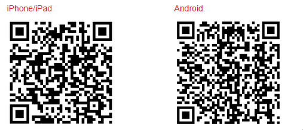

Overzicht
Met Audio Station kunt u op uw Synology NAS opgeslagen muziek via het internet organiseren, doorbladeren en afspelen. Audio Station ondersteunt ook een groot aantal bestandsindelingen. Zo kunt u genieten van uw muziek, in om het even welke bestandsindeling. U kunt ook DS audio, een mobiele toepassing met aanvullingen op Audio Station, downloaden zodat u onderweg toegang heeft tot de muziek op uw Synology NAS.
1. Audio Station installeren
- Ga naar Package Center en zoek Audio Station. Klik op Installeren.

2. Audiobestanden opslaan in de muziekmap
- Ga naar File Station > music en klik op Uploaden.
- Selecteer de bestanden die u wilt uploaden naar uw map music op uw lokale computer.

3. Bladeren in muziek
Na het uploaden van muziekbestanden kunt u uw muziek op Audio Station afspelen en doorbladeren. Wilt u ook buiten uw lokaal netwerk toegang tot uw muziekbestanden hebben, dan raden we u aan om QuickConnect in te schakelen bij Configuratiescherm > QuickConnect. Hebt u nog geen Synology-account, dan kunt u in enkele minuten een account instellen en uw DiskStation een QuickConnect ID toewijzen. Na inschakeling van deze optie kunt u zich aanmelden bij DSM en hebt u overal toegang tot uw muziek. U kunt uw QuickConnect ID ook gebruiken voor rechtstreekse aanmelding bij DS audio, zo hoeft u uw IP-adres niet te onthouden.
3.1 Mijn muziek
Min muziek in het linkerpaneel bevat de muziek in de gedeelde map muziek of andere geïndexeerde mappen van uw Synology NAS. In het gedeelte Mijn muziek wordt uw muziek in categorieën gesorteerd zodat u naar eigen voorkeuren met verschillende opties eenvoudige door uw muziek kunt bladeren zoals Op map, Op album of Op artiest. U kunt ook uw favoriete muziekverzamelingen vastmaken aan Home en de nummers bekijken die gecategoriseerd zijn naar muziekgenre in Aanbevolen genre. Klik op elke categorie om naar een nummer te zoeken of selecteer de categorie in het vervolgkeuzemenu in de zoekbalk.

3.2. Weergavemodi
Met de pictogrammen in de rechterbovenhoek van Audio Station kunt u tussen de verschillende modi schakelen waarmee u in uw muziekbibliotheek kunt bladeren.
- Lijstweergave, hier worden uw muzieknummers weergegeven in een lijst met de beschrijvingen nummer, artiest, album, nummerduur, tracknummer en rating.
- Illustraties, toont de tracknaam, albumnaam en albumillustratie.
- Afspeelwachtrij toont de afspeelwachtrij op volledig scherm met albumhoezen en nummernamen of songteksten.


4. Publiek delen
Met de publiek delen-functie van Audio Station kunt u nummers publiek delen door een koppeling te sturen naar personen die niet tot uw netwerk behoren of niet een Synology NAS hebben. Na ontvangst van de koppeling kunnen ze het nummer afspelen.
4.1. Nummers publiek delen
- Rechtsklik op het(de) nummer(s) dat(die) u wilt delen en selecteer Publiek delen.
- Bij het publiek delen van nummers bestaan twee opties:
- Wanneer u een enkel nummer selecteert om te delen: in het dialoogvenster dat verschijnt, schakelt u het selectievakje naast Publiek delen in om de koppeling in te schakelen.
- Selecteert u meerdere nummers om te delen, dan wordt een afspeellijst gemaakt. U kunt uw afspeellijst een naam geven en een geldigheidsperiode voor de koppeling aangeven door het selectievakje naast Geldigheidsperiode aanpassen in te schakelen en op OK te klikken.


- Kopieer de koppeling en plak deze bij de persoon met wie u de afspeellijst wilt delen of klik op Naar koppeling om rechtstreeks naar de koppeling te gaan.

5. Muziek op mobiele apparaten organiseren en afspelen
DS audio kan worden uitgevoerd op iPad/iPhone/iPod touch en Android-toestellen. De toepassing kan gratis worden gedownload van de Apple App Store en Google Play. Of u kunt de onderstaande QR-code inscannen en het onmiddellijk downloaden.
